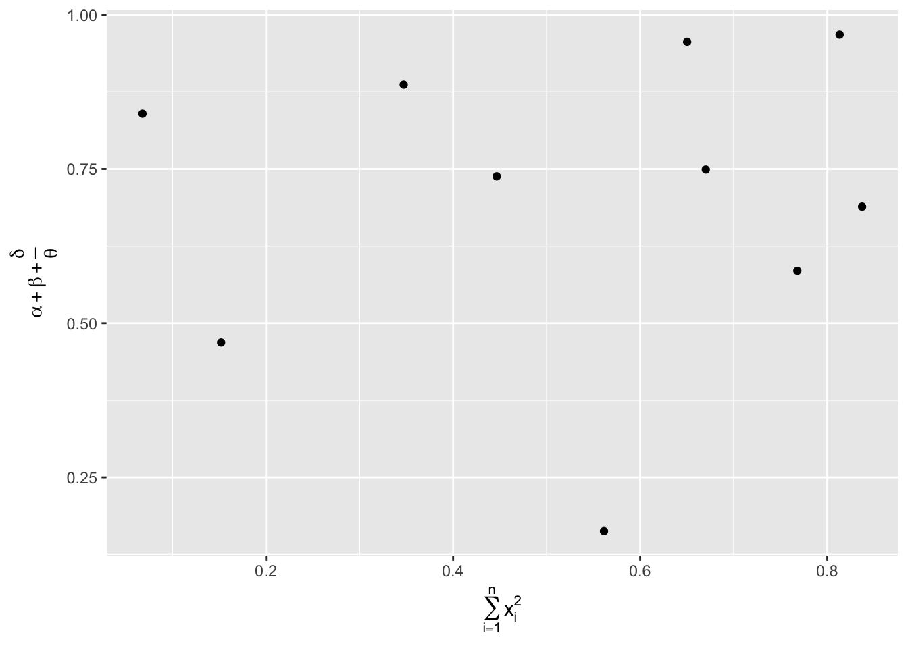
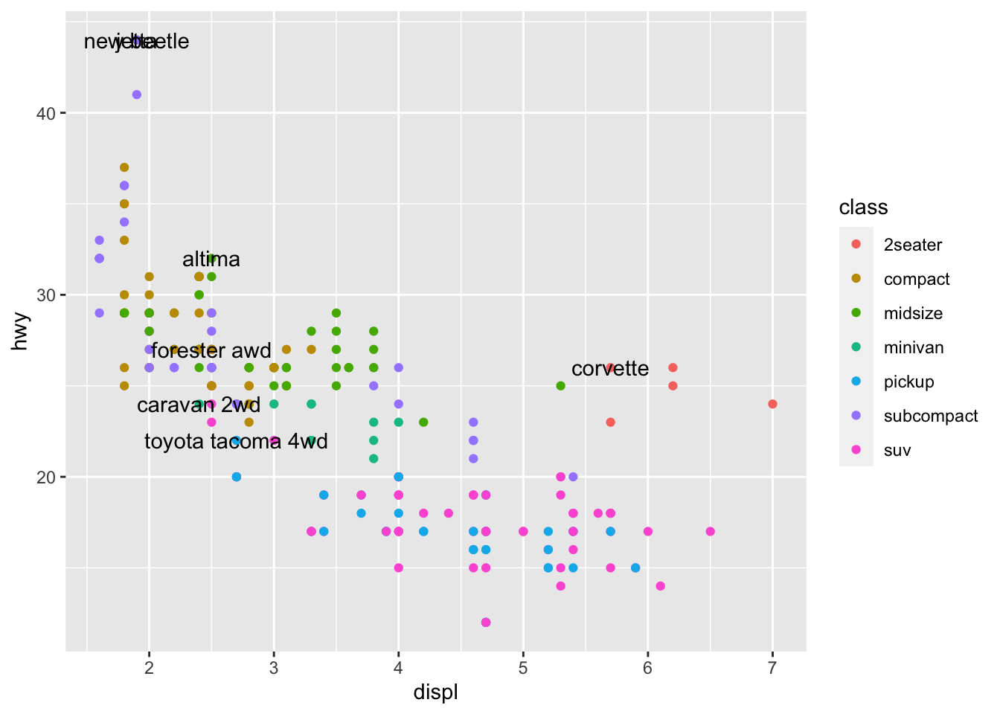
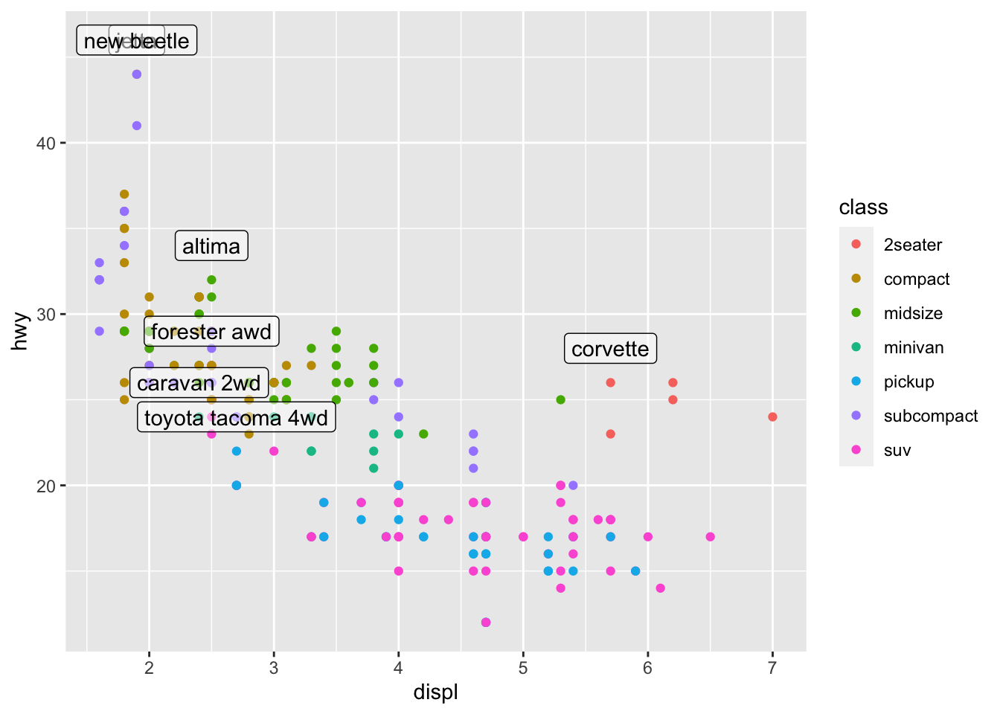
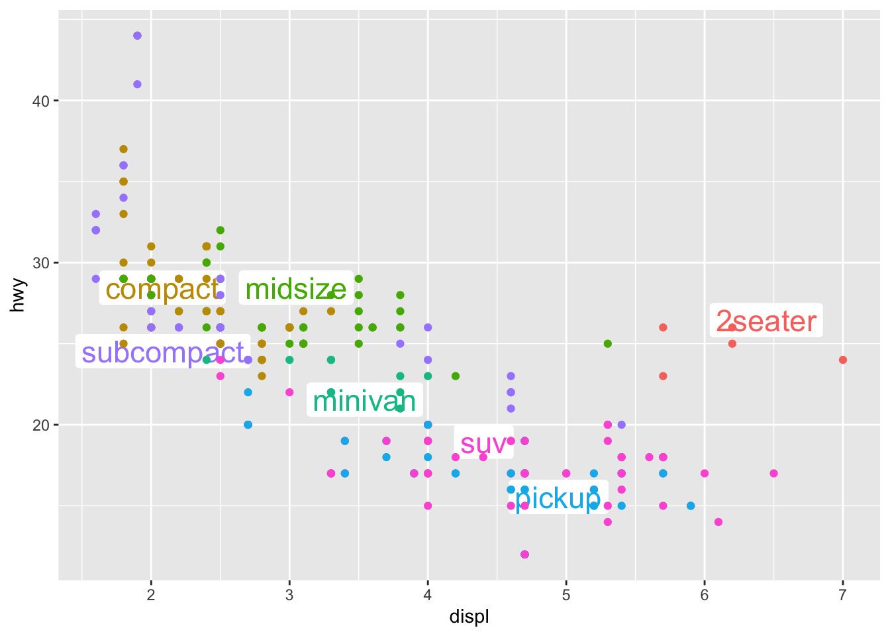
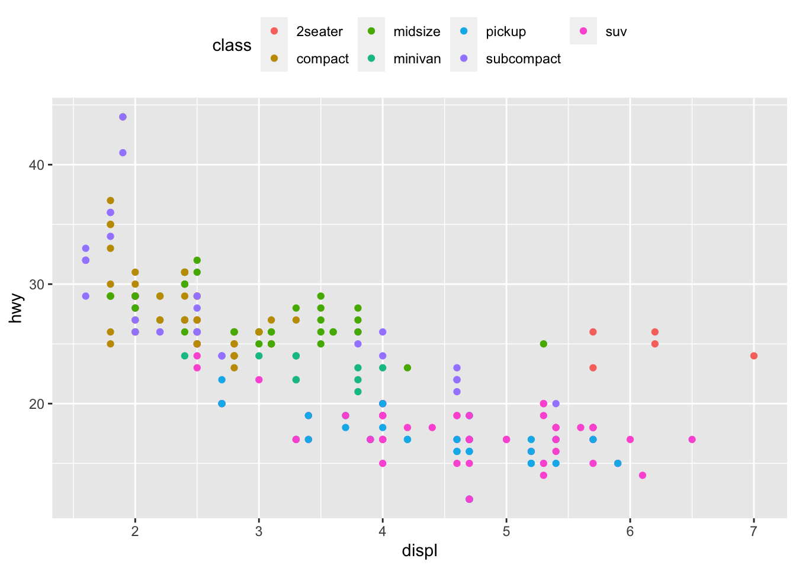

图形沟通：ggplot2
王诗翔 · 2018-10-17
准备工作
library(tidyverse)
#> ── Attaching packages ──────────────────────────────────────────────────────────── tidyverse 1.3.0 ──
#> ✓ ggplot2 3.3.2 ✓ purrr 0.3.4
#> ✓ tibble 3.0.3 ✓ dplyr 1.0.0
#> ✓ tidyr 1.1.0 ✓ stringr 1.4.0
#> ✓ readr 1.3.1 ✓ forcats 0.5.0
#> ── Conflicts ─────────────────────────────────────────────────────────────── tidyverse_conflicts() ──
#> x dplyr::filter() masks stats::filter()
#> x dplyr::lag() masks stats::lag()标签
添加标签就是设置横轴、纵轴的解释文字和标题。我们使用labs()函数实现它。
ggplot(mpg, aes(displ, hwy)) +
geom_point(aes(color = class)) +
geom_smooth(se = FALSE) +
labs(
title = paste(
"Fuel efficiency generally decreases with",
"engine size"
)
)
#> `geom_smooth()` using method = 'loess' and formula 'y ~ x'
使用标题的目的是概况主要成果。尽量不要使用那些只对图形进行描述的标题，如“发动机排量与燃油效率图”。（学到了~）
使用subtitle和caption可以为添加更多的文本，前者添加在标题下，后者一般添加在右下角，用于描述数据来源。
ggplot(mpg, aes(displ, hwy)) +
geom_point(aes(color = class)) +
geom_smooth(se = FALSE) +
labs(
title = paste(
"Fuel efficiency generally decreases with",
"engine size"
),
subtitle = paste(
"Two seaters (sports car) are an exception",
"because of their light weight"
),
caption = "Data from fueleconomy.com"
)
#> `geom_smooth()` using method = 'loess' and formula 'y ~ x'我们还可以使用labs()函数替换坐标轴和图例的标题。
ggplot(mpg, aes(displ, hwy)) +
geom_point(aes(color = class)) +
geom_smooth(se = FALSE) +
labs(
x = "Engine displacement (L)",
y = "Highway fuel economy (mpg)",
color = "Car type"
)
#> `geom_smooth()` using method = 'loess' and formula 'y ~ x'
我们还可以在标题中使用数学公式代替字符串文本，使用quote()函数代替""，再使用?plotmath命令查看可用选项：
df = tibble(
x = runif(10),
y = runif(10)
)
ggplot(df, aes(x, y)) +
geom_point() +
labs(
x = quote(sum(x[i] ^ 2, i == 1, n)),
y = quote(alpha + beta + frac(delta, theta))
)
注释
除了为图形的主要部分添加标签，有时我们还想对单个观测或分组观测添加标签。可用使用geom_text()函数，它的用法基本与geom_point()函数相同，但提供了一个额外的图形属性label，我们可以通过该属性添加文字。
可以通过2种方法提供标签。
首先，可以使用tibble。下面标记每类汽车中效率最高的型号。
best_in_class = mpg %>%
group_by(class) %>%
filter(row_number(desc(hwy)) == 1)
ggplot(mpg, aes(displ, hwy)) +
geom_point(aes(color = class)) +
geom_text(aes(label = model), data = best_in_class)
上面的图标签重叠，数据点混在一起，所以不是很好看。改进的方式是使用geom_label()替换，它可以给文本加个方框，另外我们可以用nudge_y参数让标签位于数据点的正上方：
ggplot(mpg, aes(displ, hwy)) +
geom_point(aes(color = class)) +
geom_label(
aes(label = model),
data = best_in_class,
nudge_y = 2,
alpha = 0.5
)
这样情况似乎好上不少，但我们可以发现左上角有两个标签重叠了。我们无法通过对每个标签进行转换来解决这问题，但可以使用Kamil Slowikowski开发的ggrepel包，该包可以自动调整标签的位置，使得它们免于重叠。
ggplot(mpg, aes(displ, hwy)) +
geom_point(aes(color = class)) +
geom_point(size = 3, shape = 1, data = best_in_class) +
ggrepel::geom_label_repel(
aes(label = model),
data = best_in_class
)这里我们还做了一个贴心的改动：使用较大的空心圆强调添加了标签的数据点。
有时候我们可以通过相同的方式将标签直接放在图上，以替代图例。
class_avg = mpg %>%
group_by(class) %>%
summarise(
displ = median(displ),
hwy = median(hwy)
)
#> `summarise()` ungrouping output (override with `.groups` argument)
ggplot(mpg, aes(displ, hwy, color = class)) +
ggrepel::geom_label_repel(aes(label = class),
data = class_avg,
size = 6,
label.size = 0,
segment.color = NA) +
geom_point() + theme(legend.position = "none")
即使只想向图中添加一个标签，也需要创建一个数据库（这就是麻烦之处吧）。通常我们希望标签在图的角落，此时应使用summarise()计算出x和y的最大值，并保存在数据框中。
label = mpg %>%
dplyr::summarize(
displ = max(displ),
hwy = max(hwy),
label = paste(
"Increasing engine size is \nrelated to",
"decreasing fuel economy"
)
)
ggplot(mpg, aes(displ, hwy)) +
geom_point() +
geom_text(
aes(label = label),
data = label,
vjust = "top",
hjust = "right"
)如果想让标签紧贴着图形的边界，可以使用+Inf和-Inf值，这样就不用计算位置了，使用tibble()函数直接创建数据库即可。
label = tibble(
displ = Inf,
hwy = Inf,
label = paste(
"Increasing engine size is \nrelated to",
"decreasing fuel economy"
)
)
ggplot(mpg, aes(displ, hwy)) +
geom_point() +
geom_text(
aes(label = label),
data = label,
vjust = "top",
hjust = "right"
)前面我们都是使用\n手动切换文本行。另一种方式是用stringr::str_wrap()函数自动换行，不过需要给定每行的字符数。
"Increasing engine size is related to decreasing fuel economy." %>%
stringr::str_wrap(width = 40) %>%
writeLines()
#> Increasing engine size is related to
#> decreasing fuel economy.除了geom_text()，ggplot2还有很多其他函数可以为图形添加注释。
- 使用
geom_hline()和geom_vline()函数添加参考线。 - 使用
geom_rect()函数为感兴趣的数据点周围绘制一个矩形。边界由xmin、xmax、ymin和ymax确定。 - 使用
geom_segment()函数及arrow参数绘制箭头，指向需要关注的数据点，属性x和y定义开始位置，xend和yend定义结束位置。
唯一的限制是你的想象力和耐心。
标度
标度控制从数据值到图形属性的映射，它可以将数据转换为视觉上可以感知的东西。默认ggplot2会自动向图表中添加标度。
例如，输入下面代码：
ggplot(mpg, aes(displ, hwy)) +
geom_point(aes(color = class))
ggplot2会自动在后台为代码添加默认标度：
ggplot(mpg, aes(displ, hwy)) +
geom_point(aes(color = class)) +
scale_x_continuous() +
scale_y_continuous() +
scale_color_discrete()标度的命名模式为：scale_图形属性名称_标度名称。
基于以下两种原因，我们可以不使用默认标度。
- 对默认标度一些参数进行调整
- 整体替换默认标度
坐标轴刻度与图例
影响坐标轴和图例外观的主要参数有两个：breaks和labels。breaks控制坐标轴的刻度位置，以及与图例相关的数值显示。labels控制与每个坐标轴或图例相关的文本标签。
breaks的最常用用途是替换默认刻度。
ggplot(mpg, aes(displ, hwy)) +
geom_point() +
scale_y_continuous(breaks = seq(15, 40, by = 5)) 我们可以用相同方式使用
我们可以用相同方式使用labels（与breaks长度相同的字符向量）。我们可以将其设为NULL，这样不显示刻度标签，对于地图或不适合展示数值的图表来说，这种方式很有用。
ggplot(mpg, aes(displ, hwy)) +
geom_point() +
scale_x_continuous(labels = NULL) +
scale_y_continuous(labels = NULL)
相应地，我们可以利用这两个参数控制图例外观。坐标轴和图例统称为引导元素。坐标轴用于表示x和y图形属性；图例用于表示其他的引导信息。
需要使用breaks的另一种情况是，数据点少，而我们想强调观测的确切位置。
下面图形展示每位美国总统任期的开始时间和结束时间。
presidential %>%
mutate(id = 33 + row_number()) %>%
ggplot(aes(start, id)) +
geom_point() +
geom_segment(aes(xend = end, yend = id)) +
scale_x_date(
NULL,
breaks = presidential$start,
date_labels = "'%y"
)
日期型和日期时间型标度的刻度和标签格式对应于date_labels和date_breaks。
图例布局
如果想要控制图例的位置，需要使用theme()函数设置。简而言之，主题的作用就是控制图形中与数据无关的部分。
主题设置中的legend.position可以控制图例的位置。
base = ggplot(mpg, aes(displ, hwy)) +
geom_point(aes(color = class))
base + theme(legend.position = "left")
base + theme(legend.position = "top")
base + theme(legend.position = "bottom")
base + theme(legend.position = "right") # 默认设置
使用legend.position = "none"可以去掉图例显示。
要想控制单个图例的显示，可以配合guide_legend()或guide_colorbar()函数来使用guides()函数。
下面，我们给出两个重要设置：使用nrow设定图例项目的行数，并覆盖一个图形属性，以便数据点更大一些。如果想在一张图表上使用较低的alpha值显示多个数据点，那么这些设置非常重要。
ggplot(mpg, aes(displ, hwy)) +
geom_point(aes(color = class)) +
geom_smooth(se = FALSE) +
theme(legend.position = "bottom") +
guides(
color = guide_legend(
nrow = 1,
override.aes = list(size = 4)
)
)
#> `geom_smooth()` using method = 'loess' and formula 'y ~ x'
标度替换
我们还可以替换整体标度。最经常进行替换的两种标度是连续型标度和颜色标度。它们的原理适用于其他图形属性。 绘制出变量转换是非常有用的，比如：
ggplot(diamonds, aes(carat, price)) +
geom_bin2d()ggplot(diamonds, aes(log10(carat), log10(price))) +
geom_bin2d()
这种变换的缺点是坐标轴是以转换后的值来标记的。除了在图形属性映射中进行转换，我们还可以使用标度进行转换。
ggplot(diamonds, aes(carat, price)) +
geom_bin2d() +
scale_x_log10() +
scale_y_log10()
经常需要修改定制的另一种标度是颜色。默认分类标度以一种非常均匀的方式在色环上选择颜色。常用的另一种配色方式是使用ColorBrewer标度，经过手工调整后，这种方式适合那些有色盲症的人。
ggplot(mpg, aes(displ, hwy)) +
geom_point(aes(color = drv))ggplot(mpg, aes(displ, hwy)) +
geom_point(aes(color = drv)) +
scale_color_brewer(palette = "Set1") 如果只有很少几种颜色，我们完全可以再添加一种形状映射，虽然冗余，但这样可以确保图表在黑白方式下也可以为人所理解。
如果只有很少几种颜色，我们完全可以再添加一种形状映射，虽然冗余，但这样可以确保图表在黑白方式下也可以为人所理解。
ggplot(mpg, aes(displ, hwy)) +
geom_point(aes(color = drv, shape = drv)) +
scale_color_brewer(palette = "Set1")
ColorBrewer标度在线网址是http://colorbrewer2.org/，在R中可以通过RColorBrewer包实现，包的作者是Erich Neuwirth。
如果预先确定了数据值和颜色间的映射，那么可以使用scale_color_manual()函数。
presidential %>%
mutate(id = 33 + row_number()) %>%
ggplot(aes(start, id, color = party)) +
geom_point() +
geom_segment(aes(xend = end, yend = id)) +
scale_color_manual(
values = c(Republican = "red", Democratic = "blue")
)对于连续的颜色标度，我们可以使用内置函数scale_color_gradient()或scale_fill_gradient()来表示。如果想要发散的颜色标度，可以使用scale_color_gradient2()函数，它可以使用正数和负数表示不同的颜色。这对于区分出位于平均值以上和以下的点非常合适。
另一个可以选用的函数是由viridis包提供的scale_color_viridis()，它对ColorBrewer分类标度进行了连续模拟。以下是该包使用指南的一个示例：
df = tibble(
x = rnorm(10000),
y = rnorm(10000)
)
ggplot(df, aes(x, y)) +
geom_hex() +
coord_fixed()ggplot(df, aes(x,y)) +
geom_hex() +
viridis::scale_fill_viridis() +
coord_fixed()缩放
控制图形范围的方法有3种：
- 调整绘图所用数据
- 设置标度范围
- 在
coord_cartesian()函数中设置xlim和ylim参数值
如果想放大图形的一篇区域，最好使用coord_cartesian()函数。比较以下两个图形：
ggplot(mpg, mapping = aes(displ, hwy)) +
geom_point(aes(color = class)) +
geom_smooth() +
coord_cartesian(xlim = c(5, 7), ylim = c(10, 30))
#> `geom_smooth()` using method = 'loess' and formula 'y ~ x'
mpg %>%
filter(displ >= 5, displ <= 7, hwy >= 10, hwy <= 30) %>%
ggplot(aes(displ, hwy)) +
geom_point(aes(color = class)) +
geom_smooth()
#> `geom_smooth()` using method = 'loess' and formula 'y ~ x'
定制
最后，我们可以使用主题来定制图形中的非数据元素。
ggplot(mpg, aes(displ, hwy)) +
geom_point(aes(color = class)) +
geom_smooth(se = FALSE) +
theme_bw()
#> `geom_smooth()` using method = 'loess' and formula 'y ~ x'ggplot2默认可以使用下面8种主题，在ggthemes包（https://github.com/jrnold/ggthemes）中，还可以使用更多主题。
theme_bw()- 带网格线的白背景theme_light()- 浅色坐标轴和网格线theme_classic()- 经典主题，只有坐标轴，没有网格线theme_linedraw()- 只有黑色网格线theme_dark()- 暗色背景，用于对比theme_minimal()- 极简主题，无背景theme_gray()- 灰色背景（默认主题）theme_void()- 空白主题，只显示几何对象
很多人感到诧异，为什么默认主题要使用灰色背景。这是有意为之，因为这样可以在网格线可见的情况下更加突出数据。白色网格线既是可见的（它们有助于位置判定），又对视觉没有什么严重影响，我们完全可以视而不见。图表的灰色背景不像白色背景那么突兀，与文本印刷颜色非常相近，保证了图形与文档其他部分浑然一体。最后，灰色背景可以创建一片连续的颜色区域，使得图形成为形象鲜明的一个视觉实体。
保存图形
有两种办法将图形从R导入最终报告：
- 使用
ggsave() - 使用
knitr
ggsave()可以将最近生成的图形保存到磁盘。
ggplot(mpg, aes(displ, hwy)) + geom_point()
调用ggsave()：
ggsave("my-plot.pdf")ggsave()会使用当前绘图设备的尺寸保存图形。
然而，我们一般通常用R Markdown生成最终报告，因此我们将重点介绍在生成图形时应该了解的一些重要代码选项。
图形大小
在R Markdown中，关于图形的最大问题是如何确定其大小和形状。控制图形大小的选项主要有5个：fig.width、fig.height、fig.asp、out.width和out.height。
之所以说图形大小是一个难题，是因为图形大小有两种（R生成的图形的大小，以及插入和输出文档中的图形的大小），而且指定图形大小的方法也有多种（即高度、宽度和高宽比；三者任选其二）。
我们只使用以上5种选项中的3种。
- 我们发现，宽度一致的图形是最令人伤心悦目的。为了使图形宽度保持一致，我们设置图形的默认参数为
fig.width = 6（6英寸）和fig.asp = 0.618（黄金分割）。在单个代码段中，我们只调整fig.asp。 - 我们使用
out.width控制输出图形的大小，并将其设置为行宽的百分比。默认设置为out.width = "70"和fig.align = "center"。这样图形既不会占用太多空间，也不会显得拥挤。 - 如果想在一行中放置多个图形，可以将
out.width设置为50%以放置2个图形、设置为33%以放置3个图形。 如果我们发现必须眯起眼睛才能看清图形的文本，那么久需要调整fig.width参数。如果fig.width大于最终文档中的图形尺寸，那么文本就会显得过小；如果fig.width小于最终文档中的图形尺寸，那么文本就会显得过大。一般来说，我们需要试验几次才能找到fig.width和最终文档中的图形的最佳比例。
为了说明这个问题，我们可以看看一下3幅图形，它们的fig.width分别是4、6、8。
### 其他重要选项
当代码和文本混合时，我们建议设置fig.show = "hold"，以使图形显示在代码后面。这样做的好处是可以强制使用解释性图形将大块代码分解成更小的部分。
如果想为图形添加说明文字，可以使用fig.cap。在R Markdown中，这样做会将“内联”模式修改为“浮动”模式。
如果想要生成PDF格式输出文件，使用默认的图形格式即可。但如果图形包含几千个数据点，速度回非常慢，这时设置dev = 'png'生成png图片将是不错的选择。
即使通常不为代码段添加标签，但为生成图形的代码段取名也是一种非常好的做法。
更多学习资源
- ggplot2教程：《ggplot2：数据分析与图形艺术》
- ggplot2扩展指南网站（http://www.ggplot2-exts.org），该站点列举很多ggplot2扩展包，它们实现了新的几何对象和标度等。
学习自《R for Data Science》